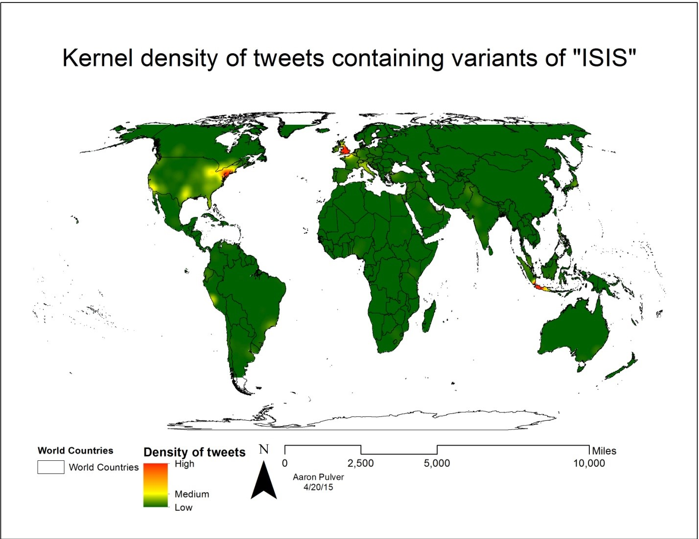
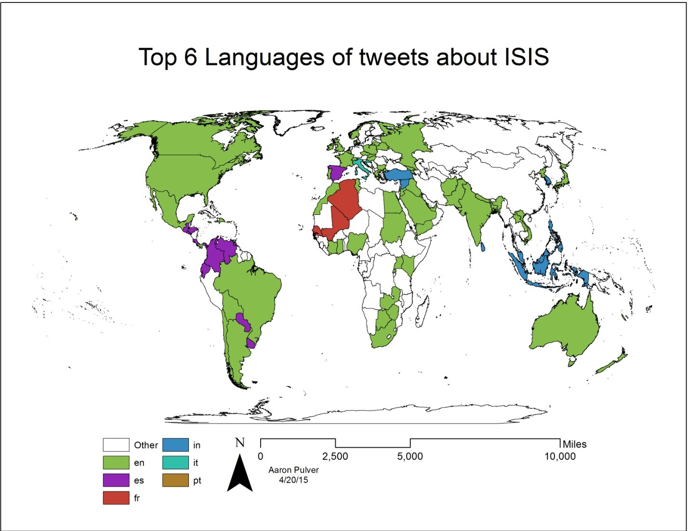
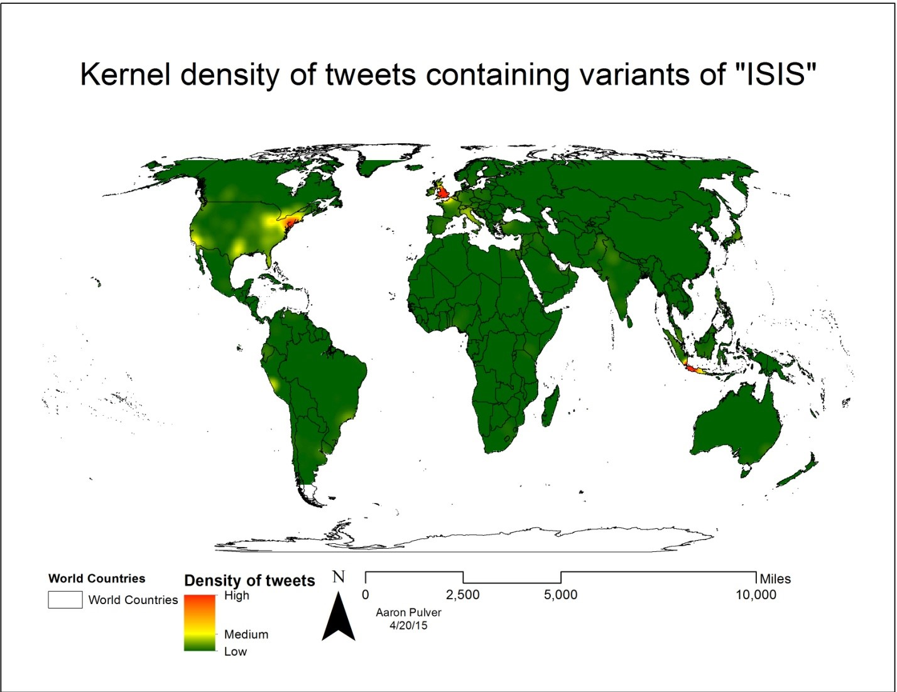
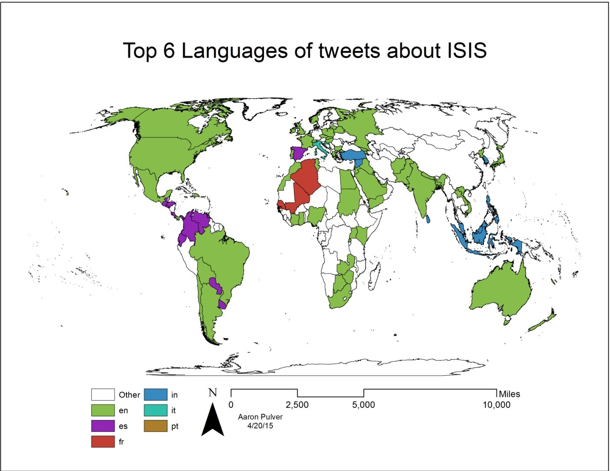

Data Collection Architecture
A system architecture was developed to obtain tweets and store them as shown below. A python script was written which used the tweepy library to connect to the Twitter Streaming API. The streaming api continuously returned tweets which met specific criteria. These tweets were then stored in a MySQL database. The database stored the user, tweet, hashtags, urls, and other metadata which was useful for analysis. This part of the system ran on a Raspberry Pi microcomputer so that data would be continuously collected and stored.
The other major part of the system was done after all data were collected. The data were extracted from the MySQL database as a CSV file which could then be processed in Microsoft Excel and imported into ArcMap as XY data for spatial analysis.

 


